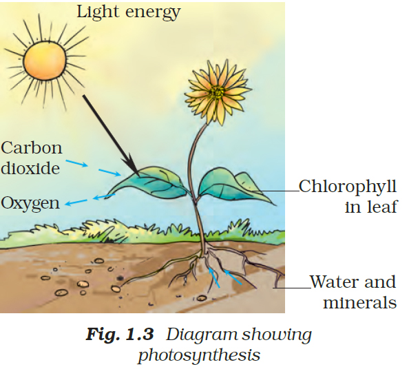
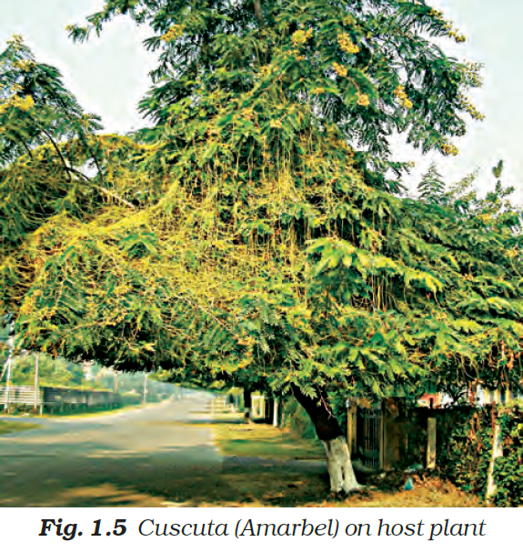
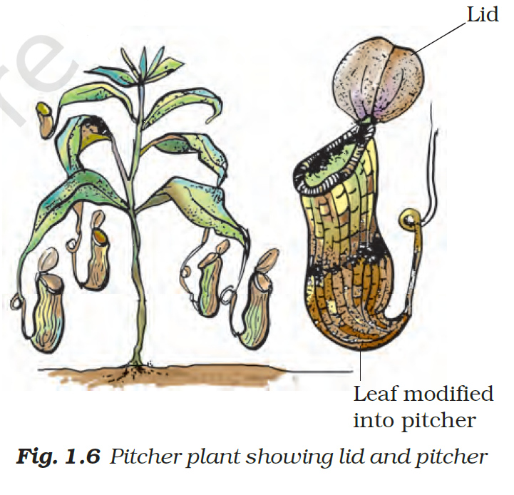
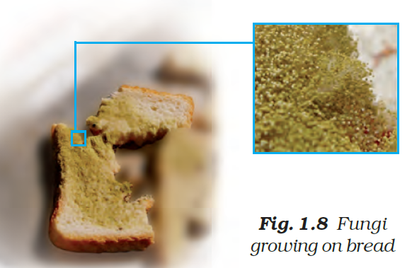

A substance that provides nourishment essential for the maintenance of life and for growth, such as vitamins, carbohydrates, minerals,protiens and fats.
The leaves have a green pigment called chlorophyll. It helps leaves to capture the energy of the sunlight. This energy is used to synthesise (prepare) food from carbon dioxide and water. Since the synthesis of food occurs in the presence of sunlight, it is called  photosynthesis (Photo: light; synthesis : to combine). So we find that chlorophyll, sunlight, carbon dioxide and water are necessary to carry out the process of photosynthesis. It is a unique process on the earth. The solar energy is captured by the leaves and stored in the plant in the form of food. Thus, sun is the ultimate source of energy for all living organisms.In the absence of photosynthesis there would not be any food. The survival of almost all living organisms directly or indirectly depends upon the food made by the plants. Besides, oxygen which is essential for the survival of all organisms is produced during photosynthesis. In the absence of photosynthesis, life would be impossible on the earth. During photosynthesis, chlorophyll containing cells of leaves, in the presence of sunlight, use carbon dioxide and water to synthesise carbohydrates (Fig. 1.3).During the process oxygen is released. The presence of starch in leaves indicates the occurrence of photosynthesis. Starch is also a carbohydrate.
The mode of nutrition in which organisms make food themselves from simple substances is called autotrophic (auto = self; trophos = nourishment) nutrition. Therefore, plants are called autotrophs. Animals and most other organisms take in food prepared by plants. They are called heterotrophs (heteros = other).
There are some plants which do not have chlorophyll. They cannot synthesise food.They use the heterotrophic mode  of nutrition.Do you see a yellow wiry branched structure twining around the stem and branches of a tree? This is a plant called Cuscuta (Amarbel). It does not have chlorophyll. It takes readymade food from the plant on which it is climbing. The plant on which it climbs is called the host. Since it deprives the host of valuable nutrients, Cuscuta is called the parasite.
There are a few plants which can trap insects and digest them. Look at the plant in Fig. 1.6. The pitcher-like or  jug-like structure is the modified part of leaf. The apex of the leaf forms a lid which can open and close the mouth of the pitcher. Inside the pitcher there are hair which are directed downwards. When an insect lands in the pitcher, the lid closes and the trapped insect gets entangled into the hair. The lid closes and the insect is trapped. The insect is digested by the digestive juices secreted in the pitcher and its nutrients are absorbed. Such insect-eating plants are called insectivorous plants.
 Take a piece of bread and moisten it with water. Leave it in a moist warm place for 2 to 3 days or until fluffy patches appear on them (Fig. 1.8). What is the colour of these patches? Observe the patches under a microscope or a magnifying glass. Write down your observations in the notebook. You will see cotton-like threads spread on the piece of bread.These organisms are called fungi. They have a different mode of nutrition. They absorb the nutrients from the bread. This mode of nutrition in which organisms take in nutrients from dead and decaying matter is called saprotrophic nutrition. Such organisms with saprotrophic mode of nutrition are called saprotrophs.
Some organisms live together and share both shelter and nutrients. This relationship is called symbiosis. For example, certain fungi live inside the roots of plants. The plants provide nutrients to the fungus and, in return, the fungus provides water and certain nutrients.
In organisms called lichens, a chlorophyll-containing partner, which is an alga, and a fungus live together. The fungus provides shelter, water and minerals to the alga and, in return, the alga prepares and provides food to the fungus.
If you want to test your knowledge click the button below for quiz.